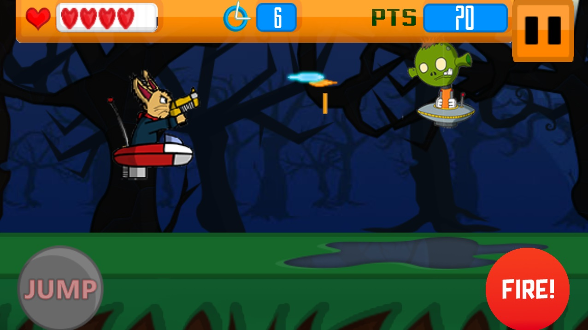
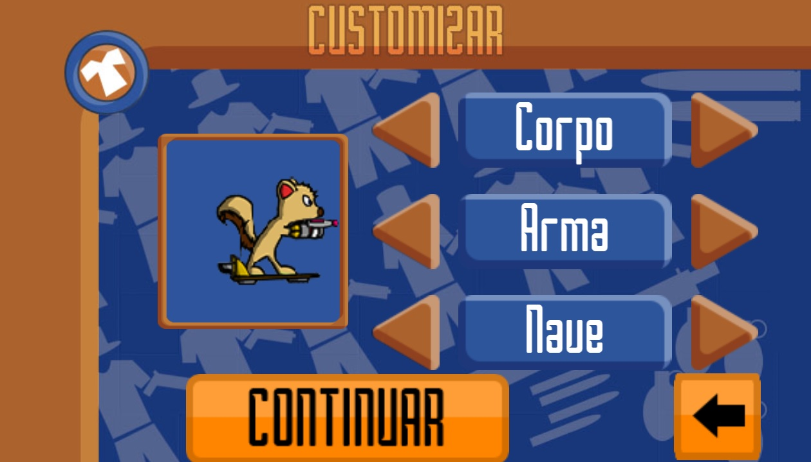
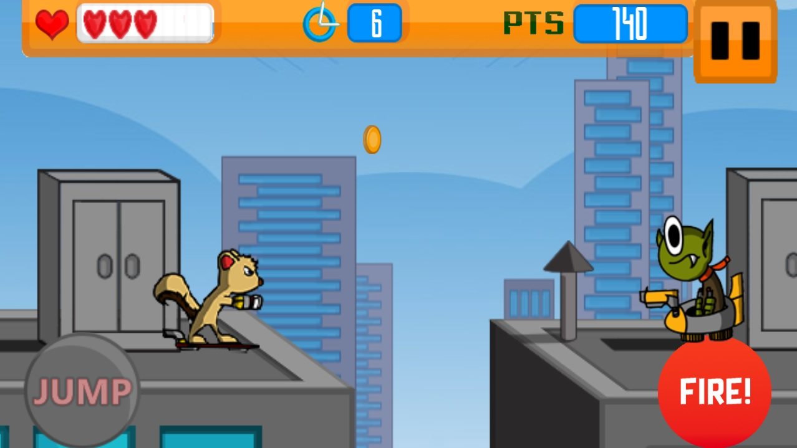

A Vingança dos Aliens
A vingança dos Aliens é um jogo mobile sidescroller onde o jogador luta contra os alienígenas que querem vingança contra a Terra. O jogador tem à sua disposição 4 personagens desbloqueáveis, e ainda várias combinações de customização para cada personagem. Além disso, o jogo conta com 4 fases, mais um tutorial. Colete moedas e mate a maior quantidade de inimigos para conseguir a pontuação mais alta!
Dream Inc foi criado usando Corona Labs como um projeto acadêmico no curso de Jogos Digitais na Universidade Feevale.
Visite a página do jogo no itch.io pelo link abaixo: